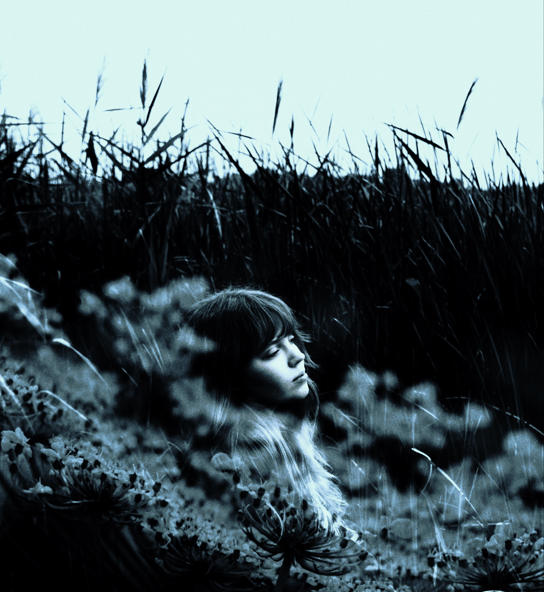

Selected Works


Photographer

Visual Artist
Я создаю эстетику из простых моментов. Глубокие тени, кинематографичный свет и чистые эмоции — это основа моего визуального языка.
В моих кадрах нет суеты. Только вы, ваша история и вневременная классика, которую вы захотите сохранить навсегда.